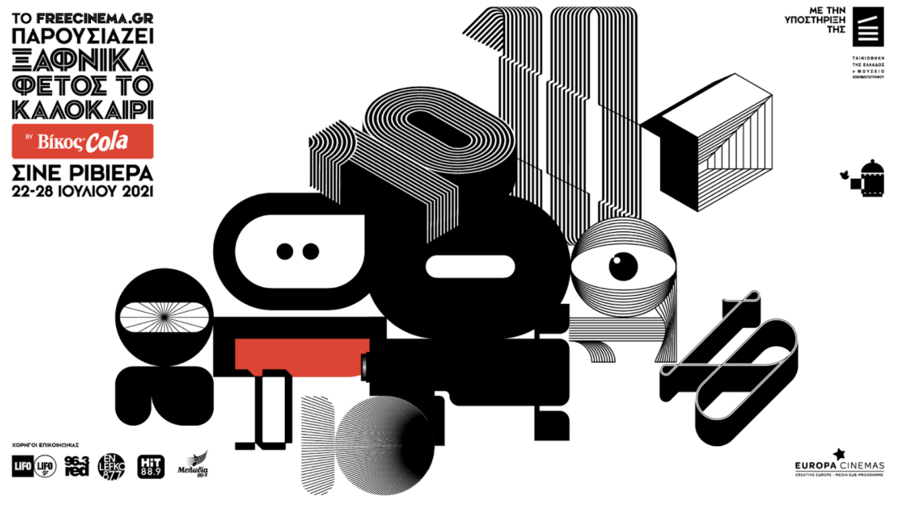
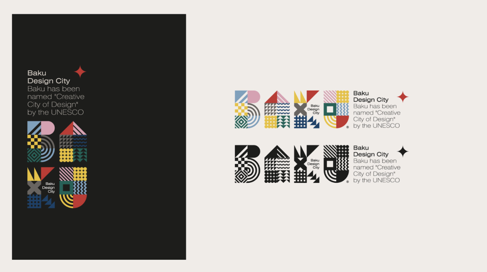
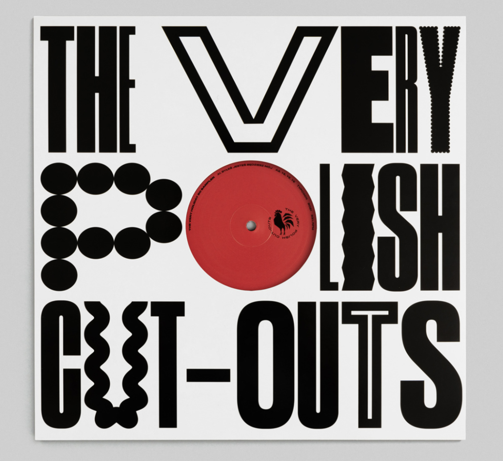

Week 1 (Sep 6-10)
For this week’s Design Journal I wanted to introduce the artwork by Alexander Calder called The Snow Flurry. This piece of artwork is made out of painted sheet steel and steel wire. It is carefully placed and adjusted in order to create this interesting backdrop shadow as long as creating this graceful movement.
I encountered this artwork when I visited MoMA a couple of weeks ago. MoMA is an exhibition that displays creative collections of both contemporary and modern art. The setting was fueled with many different artworks that were created with diverse mediums such as painting, sculpture, film, multi-media art, etc.
The functionality of this object was to portray the artist’s experience of the snowfall in Connecticut. It was simply designed for him to recreate the beauty of mother nature. The mobile was purposefully structured in a pyramid form with series of different-sized white discs. This was intentional so that it creates branch-like imagery and moves when there is a small breeze; just like a real-life snowflake.
The reason why this artwork caught my attention was its simple yet intricate use of steel wire. During my high school year, there was a project where I had to work with wires and strings. From this project, I realized how delicate and challenging it is to place wires and strings to remain in a certain way. Moreover, due to its easily bendable characteristics, it was challenging for me to keep the aesthetics of simplicity and cleanliness. Calder’s work, on the other hand, captured all of these elements, providing the aesthetically pleasing to the viewers.
I believe that this piece touches on the idea of shadows and casting shadows. This can be seen in photography class as shadows and lighting are extremely important when taking photographs. If you take a look at the artwork, there are backdrop shadows and create an abstract movement of the white discs, which creates a visually appealing movement.
Week 2 (Sep 13-17)
For this week’s Design Journal assignment, I decided to browse artworks on Behance. After a couple of hours of browsing through the website, I found an interesting product/packaging design work by Ana Miminoshvili. The setting I found this was the official website from Behance and on the exploration feed. The title of this artwork is Blink Coffee.
The functionality of this product is quite efficient. It provides graphical elements that captivate the eyes of the audience and apply them to objects that we encounter on a daily basis. The reason why the artist applied the eyes is that the title is “Blink Coffee.” I believe that the artist wanted to relate and personalize the title to the design as a whole. It was designed for customers who purchase the products, including coffee cups and coffee bags.
I like this inspiration design because it is different from a typical coffee packaging design. Usually, it contains coffee beans, cups, brown-color themes, and steam. However, this design totally escapes the norm and adds playful and colorful elements that make the overall design unique. I was first attracted by the color when I first saw the piece. The harmonious balance between the blue, pink, and coral orange was evenly placed and used.
I believe that this piece connects to my Marketing and Analytics class because I learn about how to target the audience. From what I have learned from the Marketing class, this is targeted at the younger generation who enjoys drinking coffee. However, they also enjoy the graphical elements of the package.
Week 3 (Sep 20-24)

For this week’s inspiration, I decided to explore the design of typography and letterforms. From my Typography studio and Lecture class, we have been recently dissecting the font faces and exploring the further details of the anatomy. Moreover, for my Interaction class, we have been recently working on the interview project which also requires type font usage. Therefore, I thought this would be a fun way to interact with the art piece.
I encountered this piece on Behance. It is an online platform where users can browse, share, and comment on their ideas and artworks. This special artwork was designed and directed by Dimitris Kanellopoulos. The title of this work is “Suddenly this Summer 10.”
The functionality of this piece was to show all 10 creative posters into a single one. This poster was created to display the movie posters for a film tribute in Greece. They had to think about effectiveness and style simultaneously. The posters were designed for those who are interested in attending the cinema event. The design complements its purpose well as is very thorough and displays all the information needed, such as the date, title, and location.
Something I liked about this piece of inspiration is the letterform. This poster explores the idea of the number “10” in ten diverse ways and the way they stylized them in unique ways really captured my attention.
As mentioned before, this piece connects to my Typography class and Interaction class as it explores the theme of “typography.” For instance, my Typography Studio class challenged us to create different designs for our mantra. We had to seek out of the realm and look for creative ways to portray our mantra. And I believe this poster does an excellent job in analyzing the font faces and the anatomy behind them.
Week 4 (Sep 27-Oct 1)

This piece of inspiration that I am documenting is called “Baku Design City” by Mehman Mammedov. Baku is a city in Azerbaijan.
I encountered this piece of inspiration on Behance, which is the website I’ve been recently spending a lot of my time on. The setting where I encountered this inspiration was when I was exploring the mood board created for me by Behance.
The functionality of this piece was to create a logo that combines the logo of the city with its traditional values, historical patterns, and the nature of the beautiful city. For instance, Baku has a lot of notable fine arts, such as pottery, decorative ornaments, stones, and metal products. As you can see in the image above, the design logo captures a lot of these elements that create the visual imagery of artistry. Therefore, I believe the design complements its purpose of showing national values.
It was designed mainly for the Baku citizens, but also for the strangers who are new to the Baku city. The artists reproduced geometric shapes and adapted the forms by combining the capital and symbols so that they can easily navigate the logo.
Something I really like about this piece is the asymmetric organization of the letterforms, yet how they are able to provide a visually appealing design. The design seems to be very intricate and mathematically constructed with intense details. The reason why I was initially drawn into this piece is because of how complex and detailed the typography is, however, they create a harmonious balance between one another.
I believe that this piece connects to the topic I am learning in my Studio class: “Type forms and others.” I thought it was really interesting to analyze the letterforms after learning about the basic anatomy of letter structure, such as kerning, baseline, letter spacing, serif, descender, etc.
Week 5 (Oct 4-8)
The piece of inspiration I am documenting for Week 5 is called the “Korean Medical hospital of Daejeon University Project” by Charry Jeon. It is a project to renew the hospital’s brand identity and develop a new system for the Seoul branch.
The place where I encountered this artwork was the internet, specifically BeHance.com. I was looking at their product design category. Then, after a few hours of browsing and exploring, I was able to encounter this work.
The functionality of this artwork was to demonstrate the overall vision of the newly created brand identity. The letter “H” is embedded in the logo to emphasize “Hyehwa” which is an important element for the hospital. They also consisted of their overall color palette to be pastel to display the visual imagery of nature and forest. I believe this work complements well with their idea and theme as the patterns that are embedded and the colors reinforced have a strong connection to their idea of nature and the greens. I believe that it also has a soothing aspect to its design, which goes well with the brand identity for a hospital.
The first thing that I noticed about this work that captured my attention was the harmony within its design identity. The overall color palette, font choices, patterns that are used all complement one another, and I can visually connect the elements into one brand. I believe this is a strong asset as the audience can recognize the brand just by looking at the visuals.
I believe that this piece connects to my Marketing and Analytics class as I learned about the way to grab the attention of the customers. It was really interesting to connect the dots from my class content to the design as I was able to envision the persona, brand values, and goals.
Week 6 (Oct 11-15)
The piece I decided to focus on this week was Herman Miller Summer Picnic Sweet Corn Festival Poster by Stephen Frykholm.
I encountered this piece during my typography class’s zoom meeting. Our project was focused on the theme of manifesto posters and my professor showed it to us as an example. The setting was that she was sharing her screen and sharing this art piece with the class and we were, as a class, analyzing and dissecting the graphical elements.
The functionality of this piece is to show the activeness and liveliness of the picnic setting. The poster displays a mouth with teeth and corn. The poster is really active and full of motions as if the person was actually in the process of biting the corn off. I believe that it was designed for the people who are interested or planning on visiting the Sweet Corn Festival. This poster showcases one of the most favorite foods from the picnic that is held annually. The design complements well with the purpose as it makes the poster really engaging and convincing to join the festival. Moreover, as the festival is held as a “corn” theme, the close-up image shown goes along well with the overall purpose.
One thing that I really like about this piece is the closeness to the relationship between the canvas. The images and graphical elements are almost filling up the entire canvas. However, the balance between the positive and negative space is well-positioned. Another thing that made me really attracted to this piece initially was the vibrant color. I believe the strong color palette of red, yellow, black, and white really emphasizes the design elements and makes a really loud gesture to what the author is trying to point out.
I would definitely say that this piece connects to the topic of the Manifesto Poster for my Typography Studio class. This is because not only did my professor from the typography class introduce us to this art piece but also because it shows a good representation of how to play around with the use of space and size. I had a hard time focusing on hierarchy for one of my poster projects and I thought this was a really fun way to approach typography. Overall, I think this piece is really unique and strong.
Week 7 (Oct 18-22)
This piece is called Campbell’s Soup Can by Andy Warhol. He was an American artist, film director, and producer who brought us to the realization of the popular visual art movement, pop art.
This artwork was created in 1962 and is now displayed at a museum. It is a huge artwork that consists of 32 different canvases of Campbell Soup cans. I saw this piece when I visited MoMa (Museum of Modern Art) with my friends. When I first saw this the setting was at the museum itself. It was on the 4th floor, 412. I coincidentally encountered this piece when I entered a section of the 4th floor.
The functionality of this object was to show what Andy Warhol ate for lunch for nearly 20 years. He wanted to portray the projection, tracing, stamping, and painting of this work by repeating the nearly identical image. Therefore, these 32 different yet identical soup cans are a sort of portrait of Andy Warhol. It was designed for the purpose of a self-portrait that reflects his 20 years long lifestyle pattern.
I believe that the design complements well with its intention as he ate his soup can over and over for many years and the design consists of the repetition of the soup can. Therefore, the use of repetition of the cans is a good reflection of him.
Something I like about this piece of inspiration is the use of composition. The way he displayed 32 exact soup cans create an oddly satisfying balance and harmony. Although they are distinct canvases, they create a visually harmonious image that makes the piece into one single artwork. I believe that this piece of art connects to my topic for my Typography Studio class as I am currently learning about the importance of letter spacing, size, composition, color, and repetition. And as one can see in the image above, the combination of all of these elements is distinctively portrayed in the artwork.
Week 8 (Oct 25-29)
For this week’s art inspiration, I chose the piece “Love” by Robert Clark. I encountered this on the website of the MoMa Organization. It was inside the art and artists section. The setting was the official website and this piece was listed on one of the pages.
Robert Clark was born in Indiana and made his pop collection in 1954, New York City. This piece was created as a screenprint in New York City.
The functionality of this object is simple — to create an eye-popping painting of text that relates to the hard-edge abstraction of the day. Although this piece was created for a Christmas card for the public in 1965, it was transformed into stamps, prints, sculptures, banners, rings, and tapestries.
Something I like about this piece is that it is so simple yet so powerful. Love is both accessible and complex in meaning. And I believe the way artists designed the colors, compositions, and techniques create such a balanced artwork. But out of all, the font caught my attention the most. The classic font type choice is so traditional that it adds more meaning and weight to the piece.
This piece connects to my typography studio class because we are currently learning about type fonts and the way we play around with composition, size, letter spacing, and color, and I believe that this piece explores all of the elements.
Week 9 (Nov 1-5)

The piece of inspiration I am documenting for Week 9 is Van Gogh’s artwork called “Sunflower.” This piece was created in January 1889 on oil on canvas in Arles. Currently, this piece is displayed in the Van Gogh Museum which is located in Amsterdam.
I encountered this piece on Van Gogh Museum’s official website on one of the collections pages.
This artwork consists of sunflowers in a vase, with three shades of yellow and nothing else. The functionality of this piece is to demonstrate the possibility of creating an image with numerous variations of a single color, without any loss of eloquence. It was created as a gift to the painter Paul Gauguin, and later into multiple collections.
The reason why I was attracted to this piece is that one of my favorite colors is yellow. And I thought it was so fascinating how he could create artwork with such meaning and depth. I thought it was also an interesting way to approach painting by using a single color for the entire piece. As a person who has experienced the form of painting, it is quite a difficult job to paint the entire canvas with a single color. However, by making the right hues and tones, he was able to create this masterpiece.
I believe that if I were to relate this piece to one of my courses, I would relate it to my foundation’s core class, Drawing & Imaging. This is because I learned the values of hues and the way to make different shades just by using three colors. I thought it was really fascinating to watch the way paint and color work together. Last but not least, all the contents of painting and shades we’ve covered during class are clearly demonstrated in Van Gogh’s Sunflower piece.
Week 10 (Nov 8-12)
The piece I am documenting this week is the installation of pumpkins by Yayoi Kusama. This art piece is called “The Mirror Room: Pumpkin.” It consists of various polka-dotted yellow pumpkins in a room surrounded by mirrors.
I encountered this on Instagram and later browsed further on Yayoi Kusama’s official website. The setting was the online platform, where I could browse the images in a larger view with descriptions to follow along with the images.
The functionality of this pumpkin piece was to create peace and comfort. When Yayoi was at the age of 10, she had many hallucinations that involved dots, flowers, flashes, and pumpkins. However, pumpkins brought her solace. She wanted to share the peace of mankind across the world. It was mainly designed for herself, to reflect on her feelings and emotions. However, now it is displayed as an installation so that other people can enjoy the comfort that the pumpkin provides. The design complements its purpose as the colors are consistent and the polka dots bring some kind of relief to her anxiety. Therefore, the use of repetition in both colors and shapes is a source of comfort in this artwork.
Something I really liked about this piece of inspiration is the way the dots are aligned and used. The dots vary in size, and I thought this made a really cool movement throughout the pumpkins. Moreover, it really brings out the three-dimensional shape of the pumpkin, making it more abstract and groovy.
I believe that this piece connects back to my drawing & imaging class that I took during my foundations year. This is because I learned about the use of color and repetition and its power behind it. If repetition and colors are balanced well, it can create a strong artwork just like the one of Yayoi Kusama’s.
Week 11 (Nov 15-19)

The piece I am documenting for this week’s design journal is an interactive website by HelloEnjoy which you can control the mouse in sync with the music Lights by Ellie Goulding.
I first encountered this website on our Core Interaction’s one of the recommended websites for our javascript exervsie assignment. As a class, we visited the ThreeJs.org. When I was browsing on my own to see the different examples and templates, I encountered this example on the main home page browser.
The functionality of this design piece is to create more creative interaction with the users whoever land on this link. It was designed to create more variation and playfulness to the musical elements. The design complements its purpose well as the song this designer chose was “lights” and the way this website works with the user experience is full of dashing lights, sparks, and colorful lightings. The design process does a really good job of matching the theme of the music.
Something I really liked about this inspiration was the song choice and the way the designer played around with graphic shapes and colors to match the musical rhythm. The 3D models and shapes really drew me into the user experience and was engaged the whole time. Moreover, the design elements changes throughout the song, which adds more variety to the visuals —in my opinion, this helps the users stay interested and keep away from boring them. It almost felt like I was in that space, and made me want to be in that space.
I believe that this class connects with my Core Interaction class the most because it is systemized with different types of coding methods and stylings. I really enjoyed this interactive experience, and with the coding knowledge I gain from my interaction class, I hope to create a version of my own one day.
Week 12 (Nov 22-26)

The piece I am documenting this week is a typographic poster created by Bartosz Szymkiewicz. Bartosz is a Poland-based graphic designer who creates brand identities, websites, and publications for printed and digital media. The title of this piece is “The Very Holiday 80 Sampler.”
I encountered this website when I was browsing through Behance’s official website. The setting was the desktop web on Google Chrome. It was on my recommended feed and the poster grabbed my attention so I took a look at it.
The functionality of this artwork was to redesign the very polish cut-outs EP labels. He created a series of EPs that features sleeve design and diverse color labels. It was designed for the general public to share his creativity. The design does a really good job on complementing its purpose as the colors are simple yet bold, and the fonts are very unique.
My favorite part about the design is the typography that is being used. These fonts were specifically designed to complement EP labels and help the record stand out even more. I also like how the font has a variation with shapes and curves, which creates even more dynamic and rhythm to the font. Moreover, the variation in font spacing also creates a good positive and negative space relative to the background.
I believe that this piece connects really well with my Typography Studio class as we are heavily focused on typography and such matter. For instance, we recently designed a Mantra, where we had to play around with spacing, font, size, composition, color, and I thought this was a good representation of what I learned and practiced about typography.
Week 13 (Nov 29-Dec 3)
The piece I will be documenting this week is an artwork that was collabed with KB National Card in South Korea. The piece was created by a famous artist called Kim Sedong. He worked together with the bank and created a design for the card for teenagers.
I encountered this artist first through my mom’s recommendation. He was featured in one of the famous Korean Tv broadcasts and my mom told me to research more about him and get inspired. While I was scrolling through his Instagram this design caught my attention because of its fun and young vibe of a card that is usually very dull and simple.
The functionality of this design was to create a design that was specifically made for the teenage cardholders. It was designed so that it matches their young, adventurous, and fresh atmosphere. I believe that the design complements really well with its purpose as the font choices are very playful, and the overall design as well. However, the design is still unified as the artist only used four colors to make it less messy and harmonious.
Something I like about this design is the uniqueness based on the content. Most of the time when you look at a credit or debit card, it is composed of very simple and ordinary font choices, colors, and compositions. However, this design totally escapes the norm and has a playful and funky vibe. It is young and new in its own sense. I really like how the illustrations match well with the font that is applied as well.
I believe that this piece connects to my Typography Studio Class as we are currently learning about font choices, compositions, colors, and sizes. And this example by Kim Sedong does a really good job in covering all of those elements that I’ve learned in my Typography course.